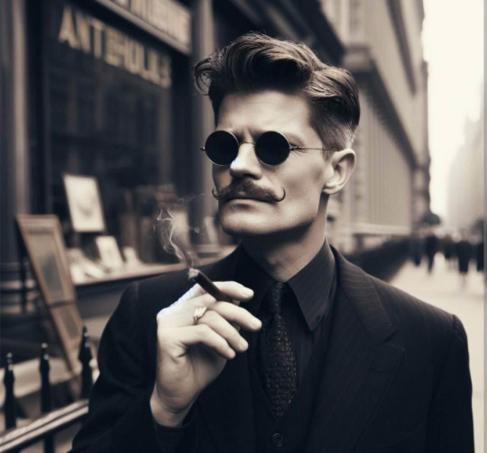

Crispin Pollick
(374¾ Points)
Male; Age 46; 5'5", 135 lbs.
| ST: 10 [0] | IQ: 15 [60] | Speed: 6.50 |
| DX: 15 [60] | HT: 11 [10] | Move: 6 |
| Dodge: 7 | Parry: 12 |
Advantages
Combat Reflexes [15] (Fright Check: 17); Eidetic Memory 2 [60]; Insubstantiality [112] (Carry Objects: Medium Encumbrance, +50%; Leaves Mental Signature: -10%; Turns off if unconscious); Invisibility [60] (Carry Objects: Medium Encumbrance, +50%; Leaves Mental Signature: -10%; Become Visible at Will: +10%; Turns off if unconscious); Lang: Ancient Egyptian [None Spoken/Native Written] [3]; Patron (Mr. Smoke) (9 or less) [10]; Lang: English [Native Spoken/Native Written] [6]; Lang: Transylvania [Native][Spoken/Written] [0]; Patron (Followers of the Right Hand) (15 or less) [60] (Equipment: Standard, +5; Special Qualities (Access to Magic in Non-magical World): Very Unusual, +10; Secret: -5; Subtraction (Minimal Intervention): -5); Reputation +4 (The Ghost - an assassin) [6] (Reaction: +4; Recognized by (Criminal Underworld and NY Coroner): Small class, ×1/3).
Disadvantages
Addiction (Cannabis) [-5]; Secret (Superpowered) [-20]; Duty (15 or less) [-25] (Involuntary: -5; Subtraction (Extremely Hazardous): -5); Enemy (Unknown Enemies of FRH) [-60] (Unknown: -5; Subtraction (Access to Magic in Non-magical World): -15); Secret (Hitman for The Five Families) [-30]; Secret Obsession 1 (Become a Vampire) [-5]; Trademark (Painted Name of Victim in Their Own Blood) [-15].
Quirks
Always Buying Incense; Collects bloody handkerkief from opponents; Grows Own Cannabis in Basement; Hates Garlic; Must Clean Victim's Face. [-5]Skills
Acting-18 [2]; Agronomy/TL6-15 [½]; Anthropology-16 [1½]; Archaeology-18 [2½]; Area Knowledge/TL6 (Egypt)-16 [½]; Area Knowledge/TL6 (NYC)-16 [½]; Astrology/TL6-14 [½]; Astronomy/TL6-14 [½]; Botany/TL6-14 [½]; Brawling-17 [4] (Parry: 12); Breath Control-16 [3]; Calligraphy-13 [½]; Carousing-12 [4]; Carpentry-16 [½]; Cartography/TL6-16 [1]; Chemistry/TL6-14 [½]; Chess-16 [½]; Criminology/TL6-15 [½]; Detect Lies-18 [2¼]; Diplomacy-15 [1]; Driving/TL6 (Automobile)-14 [1]; Fast-Draw (Knife)-16* [1]; Fast-Draw (Pistol)-16* [1]; Fast-Talk-18 [2]; First Aid/TL6-17 [1]; Gambling-18 [2]; Garrote-14 [½]; Guns/TL6 (Pistol)-19 [4]; History-17 [2]; History (Esoteric)-17 [2]; Holdout-17 [1½]; Interrogation-15 [½]; Intimidation-19 [2]; Knife-14 [½] (Parry: 7); Mathematics-15 [1]; Merchant-17 [1½]; Metallurgy/TL6-17 [2]; Naturalist-14 [½]; Occultism-16 [1]; Occultism (Vampire)-20 [3]; Poisons-15 [1]; Politics-16 [1]; Psychology-17 [2]; Research-16 [1]; Riding (Camel)-13 [½]; Riding (Horse)-13 [½]; Savoir-Faire-16 [½]; Savoir-Faire (Mafia)-18 [1½]; Shadowing-20 [3]; Sleight of Hand-14 [2]; Stealth-15 [2]; Streetwise-18 [2]; Surgery/TL6-13 [½]; Symbol Drawing-14 [½]; Theology-14 [½]; Tracking-18 [2]; Traps/TL6-15 [½].
*Cost modifiers: Combat Reflexes.
Equipment
Adjustment to Reflect Actual Carrying Weight (-22 lbs.); Smith & Wesson Military & Police .38 Special (cr 2d-1, Skill: 19; 2 lbs.; $30; Malfunction: crit.; SS: 10; Acc: 2; Half DMG: 120; MAX: 1500; RoF: 3~; Shots: 6; ST: 8; Rcl: -1; TL: 6); Belt, Leather (½ lbs.; $¾; TL: 6); Belt, Leather (½ lbs.; $¾; TL: 6); Belt, Leather (½ lbs.; $¾; TL: 6); Bottle of Good Liquor ($5); Cigarette Case ($1); Cigarette Lighter ($1); Clothing, Formal (All Black Suit - The Ghost; 4 lbs.; $20; TL: 6); Clothing, Formal (All White Linen; 4 lbs.; $20; TL: 6); Clothing, Formal (Full tailed Tuxedo, Orange Cumberbun, Black Tie; 4 lbs.; $20; TL: 6); Clothing, Ordinary (4 lbs.; $7; TL: 6); Dagger (imp 1d-3, Skill: 14, Parry: 7; ½ lbs.; $½; Reach: C); Garrote (piano wire / wooden dowels) (cut 1d-2, Skill: 11, Parry: 1; 1 lb.; $20; Reach: C; ST: 7; May not parry); Gloves (Tuxedo; 1 lb.; $4; TL: 6); Gloves, Winter (Black; 1 lb.; $4; TL: 6); Gloves, Winter (White; 1 lb.; $4; TL: 6); Ornate Scrimshaw Pipe ($5); Overcoat, Business (Black; 3 lbs.; $10; TL: 6; +4 to holdout); Overcoat, Business (White; 3 lbs.; $10; TL: 6; +4 to holdout); Shoes (Black) (PD 0, DR 1; 2 lbs.; $8); Shoes (Tuxedo) (PD 0, DR 1; 2 lbs.; $8); Shoes (White) (PD 0, DR 1; 2 lbs.; $8); Silver Ornate Flask (1 lb.; $5).Description
Crispin Pollick (alias Krioman Quest)* Colwin is born in 1877 in the middle of the Russo Turkish war where his father dies
*mother flees to newyork and raises Colwin for 14 years before dying of tb
*at sixteen hr escapes the orphanage he lived at to join a local street gang
*on the summer of his seventeenth birthday a fever almost kills Colwin afterwards he begins to develop special powers
*colwin abandoned the gang and went out to seek his riches
*Colwin grows board with the idea of riches and welth seeing as he for the past couple of years he has slept in the finest hotels eaten the finest foods and still found himself empty.
*one night while attempting to acquire more pocket change he is a witness to a murder by vampire and falls madly in love and obsessed with becoming one.
*Colwin hides the body and becomes affected by the whole ordeal and takes the identity of the drained man
*Crispin pollocks antique shop is quaint and run by a J.D.Pollock on paper but colwin wants to take this identity.
colwin goes to take care of the loose ends only to be *magically trapped and forced to work for the firm. Being constantly reminded why he works for them.
* Each job harder and harder until the firm had Colwin kill for them and then the rumors started of a man in all black showing up to take you to the after life untouchable and sometimes even unseen the ghost of New York began its terror on anyone who opposed the firm